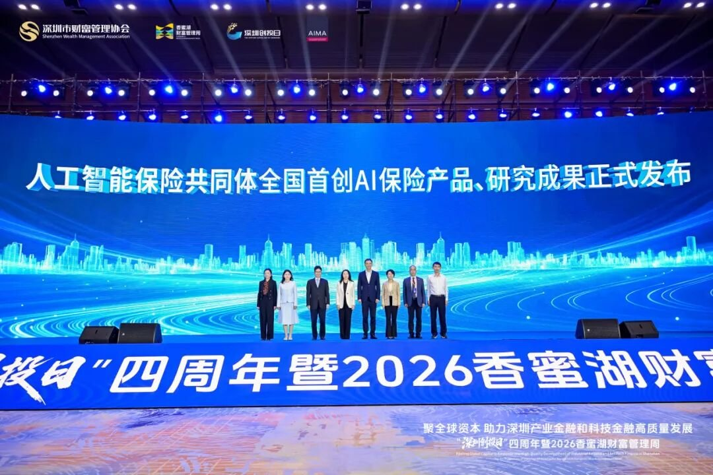

新闻 · 2026-11-24 12:00
全国首个“人工智能产业保险共同体”成立，目标破解“不敢保、不能保”难题
据IT之家报道，11月23日在深圳举行的“深圳创投日”四周年暨2026香蜜湖财富管理周开幕大会上，深圳福田区13家财险机构共同发起成立全国首个“人工智能产业保险共同体”，致力于破解大模型产业链“不敢保、不能保”难题。活动还发布全国首份系统回应人工智能产业风险与保险供给的《人工智能产业风险治理白皮书（2026）》，首次绘制“算力—模型—应用”全产业链风险图谱。

来源与核验
单一信源报道，未交叉核实